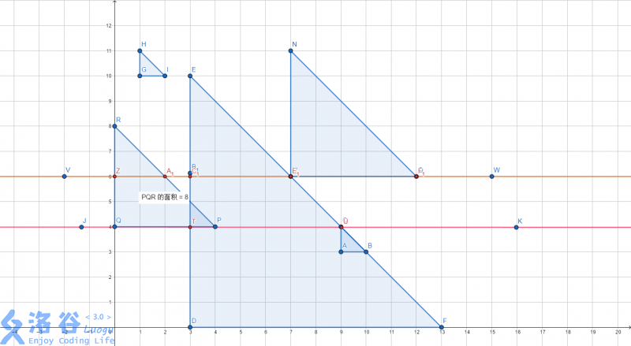

这道题已经有一位巨神发了汤普森积分的解法了，而且我的解法并不是最优的，仅供参考。
首先，计算几何中一种非常常用的算法是扫描线算法（这是一篇比较全面的博文），但是与矩形中的扫描线算法不同，三角形因为边不是都与坐标轴平行，故不能采用矩形面积计算中常用的差分+线段树维护。
回顾一下扫描线算法的思想
对于一个给定的多边形，用一组水平(垂直)的扫描线进行扫描，对每一条扫描线均可求出与多边形边的交点，这些交点将扫描线分割成落在多边形内部的线段和落在多边形外部的线段；并且二者相间排列。于是，将落在多边形内部的线段上的所有象素点赋以给定的色彩值。 算法中不需要检验每一个象素点，而只考虑与多边形边相交的交点分割后的扫描线段。
于是我们可以想到，仿照类似于矩形面积计算中的操作，当出现一条底边时将这条底边对应的三角形加入统计范围，计算出扫描线总长度，到达顶点时将这个三角形删去。又因为斜边的存在，每次扫描线和每个三角形的交线长度发生改变，因此需要每次重新统计长度。
这就是大体思路，但还有很多细节需要处理。
如图，直线\(PQ\)与\(\triangle CAB\)，\(\triangle DEF\)交于\(RDSE\)四点，并且交线与下方\(\triangle ABC\)底边\(AB\)形成了梯形\(RSBA\)，此区域的面积为$$\frac{(RS+AB)\cdot AR}{2}$$ 而若有多个梯形，由公式变形得$$\sum\frac{(a+b)\cdot h}{2} = \sum(a+b)\cdot\frac{h}{2}$$ 所以只需要算出上底和和下底和就可以计算面积了。
对于问题二，我们同样采用类差分思路，即若扫到三角形左端的交点记录一个差分值为+1的节点，扫到三角形右端交点就记录一个差分值为-1的节点。
同时对于第三点，我们不能采用值域大小的差分数组一一维护扫描线，需要先记下节点的x值，排序后进行处理：
从左向右累加差分值，若当前sum=0就记为起点，若sum>0，就继续向后，若加上当前差分值后sum=0，就用当前的x值减去起点的x值。
对于扫描线我们需要进行离散化处理，即三角形底边、顶点处添加扫描线。
#include <bits/stdc++.h>
#define eps 1e-4
#define N 2008
using namespace std;
int n,xi,yi,mi,lennow,lenbef,cnt,cnt1,cnt2=1,ori[N*2];
double ans;
struct node
{
int x,f;
}line[N*2];
struct tri
{
int x,y,m;
bool operator < (const tri& a) const
{
return y<a.y;
}
}shape[N];
vector<tri>q;
int sum_up(int x)
{
int len=0;
for(int j=1,last=0,s=0;j<=cnt;j++)
{
if(s==0)last=j;
if(s+line[j].f==0)len+=(line[j].x-line[last].x);
s+=line[j].f;
}
return len;
}
void put(int x)
{
cnt=0;
for(vector<tri>::iterator iter=q.begin();iter!=q.end();)
{
tri now=*iter;
int x1=now.x,x2=now.x+(now.m-(ori[x]-ori[now.y]));
line[++cnt]={x1,1},line[++cnt]={x2,-1};
if(x1==x2)iter=q.erase(iter);
else iter++;
}
}
void add(int y)
{
while(shape[cnt2].y==y)
{
q.push_back(shape[cnt2]);
int x1=shape[cnt2].x,x2=shape[cnt2].x+shape[cnt2].m;
line[++cnt]={x1,1},line[++cnt]={x2,-1};
cnt2++;
}
}
bool cmp(node a,node b)
{
return a.x<b.x;
}
int main()
{
scanf("%d",&n);
for(int i=1;i<=n;i++)
{
scanf("%d%d%d",&xi,&yi,&mi);
ori[++cnt]=yi,ori[++cnt]=yi+mi;//离散化纵坐标
shape[i]={xi,yi,mi};
}
sort(ori+1,ori+1+cnt);//离散化
for(register int i=1;i<=cnt;i++)
if(ori[i]!=ori[i-1])ori[++cnt1]=ori[i];
sort(shape+1,shape+1+n);
for(register int i=1;i<=n;i++)
shape[i].y=lower_bound(ori+1,ori+1+cnt1,shape[i].y)-ori;
for(int i=1;i<=cnt1;i++)//枚举扫描线
{
put(i);
sort(line+1,line+1+cnt,cmp);
lennow=sum_up(i);//上底
ans+=(double)(lennow+lenbef)*(ori[i]-ori[i-1])/2.00;//面积
add(i);
sort(line+1,line+1+cnt,cmp);
lenbef=sum_up(i);//下底
}
printf("%.1lf\n",ans);
}
先不看代码，如果你照着这个思路打过不了样例，就是因为梯形的上底和下底要分别计算。 我们还是看样例
当扫描线到\(AB\)时，没有上底，下底为\(AB\)；接着扫描，到\(R-D-S-E\)时，上底为\(RS\)，此时应先计算下方梯形面积，再更新应计算的三角形\(\triangle DEF\)，更新上底为\(RS+SE\)。即用上一条扫描线上的全部覆盖值作为下底，该扫描线上的覆盖值作为上底，最后再向三角形表中加入新的三角形。
好了，如果你真这么打了，也许只有60分
我们很容易知道在扫描线遇到三角形底边或者顶端时会产生/消失新的梯形，但在中间，是否存在其他交点导致扫描线之间不是一个梯形？答案是肯定的，一开始我就是这么错的。 我们来看以下一组数据：
其中红色为上一条扫描线，橙色为当前扫描线，不难发现，由上述逻辑计算出的梯形总上底长为\(ZA_1+C_1E_1\)，总下底为\(QU\)，算得的扫描线间总面积实为\(S_{ZA_1TQ}+S_{C_1E_1TU}\)，而实际面积中并无\(S_{ZA_1TQ}\)一项。可以看到，在两条扫描线之间还有一处斜边与直角边的交点，而之前并未考虑。所以，需要改进的地方就是在斜边与纵向直角边的交点处添加扫描线。
具体说，可以枚举斜边与直角边的交点，复杂度为\(O(n^2)\)，也可以二分后枚举，复杂度大致为\(O(n~logn)\)。
改进部分如下：bool cmp1(tri a,tri b){return a.y<b.y;}
//读入
sort(shape+1,shape+1+n);//shape{int x,y,m}存储三角形，重载运算符按x排序
for(int i=1;i<=n;i++)
{
tri now={shape[i].x+shape[i].m,0,0};
int k1=lower_bound(shape+1,shape+1+n,shape[i])-shape,//在此三角形左端以右的
k2=lower_bound(shape+1,shape+1+n,now)-shape;//在此三角形右端以左的
for(int j=k1;j<=k2;j++)
{
int crossy=shape[i].y+(shape[i].x+shape[i].m-shape[j].x);//交点的纵坐标
if(shape[j].x>shape[i].x&&shape[j].x<shape[i].x+shape[i].m&&shape[j].y<crossy&&shape[j].y+shape[j].m>crossy)ori[++cnt]=crossy;
}
}
sort(shape+1,shape+1+n,cmp1);//按y排序
//ori（扫描线纵坐标数组）排序去重并离散化
//枚举扫描线，计算面积
这样就可以AC了。
本蒟蒻的代码比较丑，然后跑得也很慢，反正也就提供一下大概思路了。
© 2018 ZhongYic00